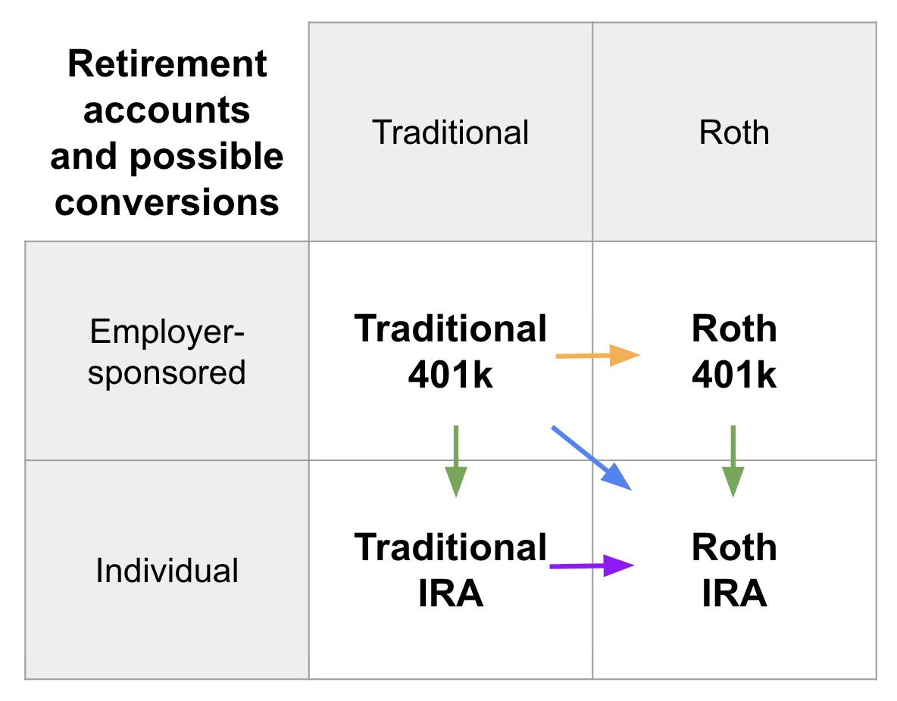

Make everything into Roth IRA
Tuesday June 17, 2025
Retirement accounts are surprisingly flexible. Rules meant to keep high earners from making certain contributions and to discourage withdrawals before age 59½ can largely be worked around. Everything can and often should get put into a Roth IRA.

All these accounts are about avoiding taxes, to encourage you to save for retirement. “Traditional” accounts can be funded with “pre-tax dollars,” and then you pay taxes when you move money out. Money you put into “Roth” accounts has already been taxed, so when you take it out it's “tax free.”
Traditional accounts can also be funded with after-tax dollars. If your 401k plan allows it, you can contribute after-tax dollars beyond the usual limit. This might seem pointless, except that you can then convert those contributions to Roth. This allows you to put quite a lot of money into a Roth 401k, and is sometimes called “mega backdoor Roth 401k.” (orange arrow in diagram)
People with high incomes aren't allowed to contribute directly to Roth IRAs (Individual Retirement Accounts) and (with slightly different limitations) can't deduct contributions to a Traditional IRA. But anyone can contribute after-tax dollars to a Traditional IRA and then convert those contributions to Roth. This is sometimes called “backdoor Roth IRA.” (part of purple arrow in diagram)
After you've left an employer, you can convert your 401k accounts to corresponding IRAs without tax implications. Mega backdoor Roth 401k may be convertible to Roth IRA even while still employed. (green arrows in diagram)
You can also convert a Traditional 401k or Traditional IRA to a Roth IRA. You pay tax on the converted amount. (blue arrow, part of purple arrow in diagram) You can control the amounts of the conversions so that you smooth your taxable income across years rather than having large single conversion events that spike your annual income—and tax rate.
Roth IRAs are particularly nice because they let you withdraw contributions any time without penalty, which makes sense since they were already taxed. In the case of roll-overs (conversions) you have to wait five years before withdrawing penalty-free, but that can still be years before age 59½, meaning money is not locked away to nearly the same extent. Only investment gains are subject to penalty for withdrawal before 59½. Additionally, Roth accounts are not subject to Required Minimum Distributions starting around age 73 the way that Traditional accounts are.
There are other exceptions to waiting until age 59½ (like if you leave your job at 55 or older, or if you set up Substantially Equal Periodic Payments under 72t) but you hardly need them.
Example: $77k tax-advantaged in 2025
The common employer-sponsored 401k has a $23,500 limit on total pre-tax (“Traditional”) and Roth (after tax) employee contributions, with a $70,000 total cap on employee and employer contributions. Individual Retirement Accounts (IRAs) are limited to $7,000 in contributions per year. (“Catch-up” adjustments increase these numbers somewhat for people 50 and up.)
The choice of Traditional or Roth depends on your tax rate now compared to when you expect to use the money, and there are calculators that can help you compare. If you are in a high tax bracket currently, putting pre-tax money in a Traditional account can help spread your income across years and lower the total effective tax rate you pay.
Imagine a high-income individual under 50 who contributes $23,500 pre-tax to their 401k, reducing their tax for the current year. Say they get 50% of that contribution matched by their employer ($11,750) so the total pre-tax 401k contribution for the year is $35,250. After they leave their employer, they can choose to convert that Traditional 401k to Roth IRA, paying tax when they make the conversion, and the converted amount is withdrawable without penalty after five years.
Since the annual limit is $70,000, they can still contribute $34,750 more in after-tax dollars and convert that to Roth 401k. This can be converted to Roth IRA at any point and the converted amount is withdrawable without penalty after five years.
They can also contribute $7,000 (in after-tax dollars) toward a Traditional IRA and then convert that to Roth, and the converted amount is withdrawable without penalty after five years.
So in one year, this person has gotten $77,000 into tax-advantaged retirement accounts, and the majority of it can be withdrawn without penalty after just five years, regardless of their age.
I am not a financial advisor, this is just my current understanding of how these things work, please consult an expert before doing anything. (And please tell me if I have anything wrong!)